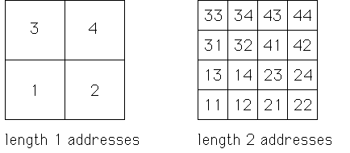

| For concreteness in the two-dimensional case, we consider the
transformations |
| T3(x, y) = (x/2, y/2) + (0, 1/2) |
T4(x, y) = (x/2, y/2) + (1/2, 1/2) |
| T1(x, y) = (x/2, y/2) |
T2(x, y) = (x/2, y/2) + (1/2, 0) |
|
| These generate the filled-in unit square S. That is, |
| S = T1(S) ∪ T2(S) ∪ T3(S) ∪ T4(S), |
| with overlaps only along edges. |
| To each of the 1/2 × 1/2 squares
Ti(S) we associate the length 1 address i. |
|
| Each of these squares can be
subdivided by iterating this decomposition process. For example, |
| T1(S) = T1T1(S) ∪
T1T2(S) ∪ T1T3(S) ∪ T1T4(S). |
| To each of the 1/4 × 1/4 squares
TiTj(S) we associate the length 2 address ij, |
|
| and so on. |
| In order of application,
addresses are read right to left: the
left-most digit is the index of most recent transformation applied. |
| Because this seems
confusing sometimes, we emphasize the order of addresses is consistent with the order
of composition of functions: ij is the address of TiTj(S). |
|  |
| Click the picture to animate. |
|
| Another way to think of addresses is as
relative coordinates.
The 1/4 × 1/4 squares with addresses 11, 12, 13, and 14 are the 1, 2, 3, and 4 parts of 1.
|